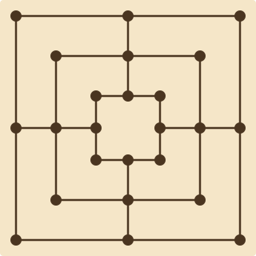
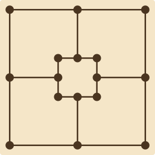
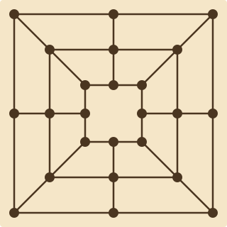

Arbitrary node-edge structures. Concentric rings (Morris), grids with diagonals (Alquerque), or any custom topology expressible as nodes connected by edges. No grid assumptions, no axis constraints.
Graph topology is the escape hatch for boards that don't fit grids, hexes, or tracks. Define nodes, connect them with edges. The topology provides adjacency; game rules handle movement and capture.
Three concentric squares connected by midpoints. 24 nodes, 32 edges. The "concentric-rings" structure generator creates the classic Morris board from parameters. Mill detection is a plugin concern, not a topology concern.
engine:
topology:
type: graph
structure: concentric-rings
params:
rings: 3
midpoints: true
players: [white, black]
setup: ""
Nine Men's Morris (3 rings + midpoints) — 24 nodes, 32 edges
Two concentric squares, no midpoints. Fewer nodes mean faster, more tactical games. Same structure generator, different ring count and midpoint parameter. The mill-forming logic works identically.
engine:
topology:
type: graph
structure: concentric-rings
params:
rings: 2
midpoints: false
players: [white, black]
setup: ""
Six Men's Morris (2 rings, no midpoints) — compact variant
Three concentric squares with midpoints AND diagonal connections. More edges mean more possible mills and more complex movement. The structure generator adds diagonals as a parameter.
engine:
topology:
type: graph
structure: concentric-rings
params:
rings: 3
midpoints: true
diagonals: true
players: [white, black]
setup: ""
Twelve Men's Morris (3 rings + midpoints + diagonals) — maximum connections
Morris games, Alquerque, and custom node-edge boards.